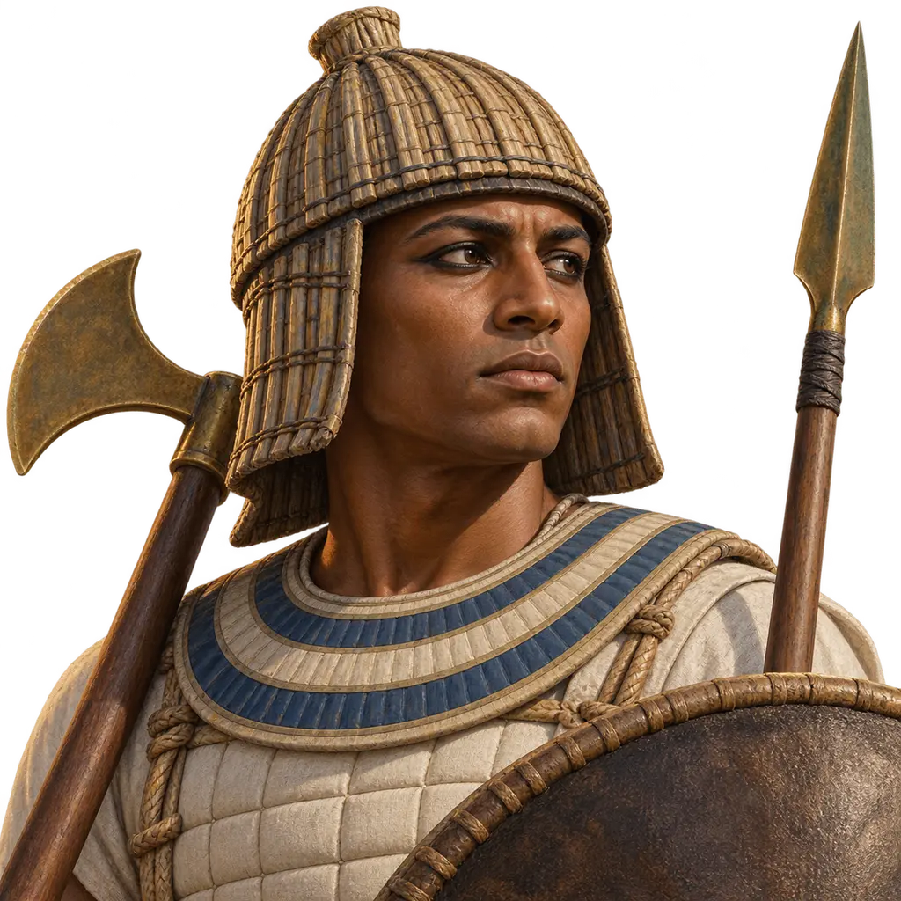
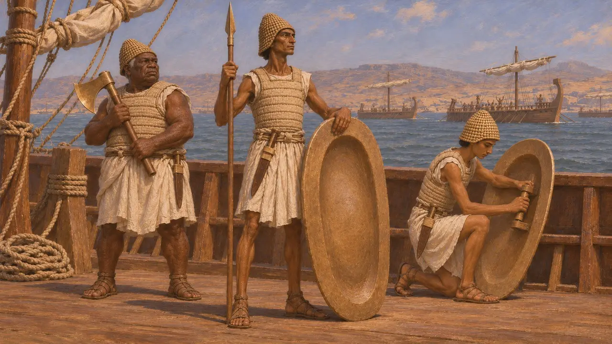
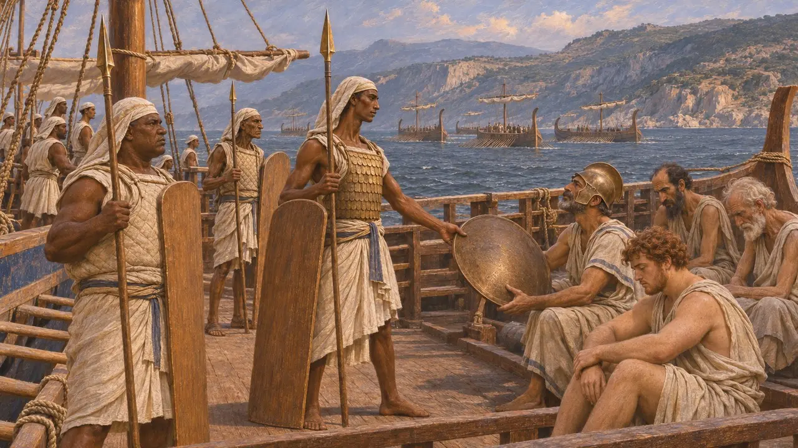
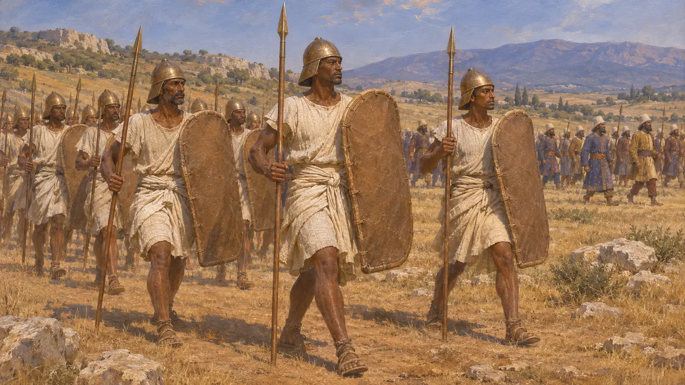
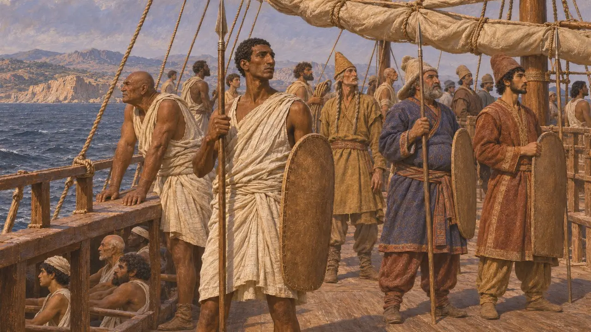

Enciclopedia › Soldados y naves

Infante de marina egipcio
Combatientes armados de la escuadra egipcia de la flota de Jerjes, 480-479 a. e. c.
En el juego: Nivel 10: Las Puertas Calientes
Egipto aportó naves y combatientes a la flota que Jerjes condujo contra Grecia en el 480 a. e. c. Heródoto describe con detalle sus armas y los distingue como los mejores combatientes del bando del Rey en Artemisio. Tras Salamina, algunos de ellos desembarcaron y lucharon en tierra en Platea en el 479 a. e. c.
En el juego: El juego muestra una unidad pesada de escudados con coselete, escudo de borde ancho, lanza de abordaje y gran hacha, tal como la describe Heródoto. También menciona cascos trenzados y cuchillos largos. La ventaja contra las unidades con escudo es una regla del juego, no historia.

Armas en la lista de la flota, según Heródoto
Relato antiguoEn su catálogo de la flota de Jerjes, Heródoto dice que Egipto aportó 200 naves. Sus hombres llevaban cascos trenzados y portaban escudos cóncavos de amplio borde, lanzas para el combate naval y grandes hachas. Añade que la mayoría vestía corazas y portaba largos cuchillos. La escuadra servía a las órdenes de Aquémenes, hermano de Jerjes, a quien este había nombrado gobernador de Egipto.
Herodotus 7.89; 7.97; 7.7

Elogios en Artemisio, reproches tras Salamina
Relato antiguoHeródoto afirma que los egipcios fueron los que mejor combatieron de entre las fuerzas de Jerjes en Artemisio, y capturaron cinco naves griegas junto con sus tripulaciones. En un discurso que atribuye a Artemisia antes de Salamina, los egipcios aparecen junto a los chipriotas, cilicios y panfilios como aliados inútiles. Tras la derrota, Mardonio culpa a los fenicios, egipcios, chipriotas y cilicios. Estos discursos son probablemente, en gran parte, composición del propio Heródoto.
Herodotus 8.17; 8.68; 8.100

El combate a pie en Platea
Relato antiguoHeródoto afirma que Mardonio sacó a los combatientes egipcios de las naves en Falero y los mantuvo con su ejército de tierra para 479 a. e. c., ya que no habían marchado con el ejército de Jerjes hasta Atenas. En Platea los incluye entre las tropas de Mardonio y los identifica con las clases guerreras hereditarias de Egipto, los hermotibios y los calasirios. En otro pasaje describe estas clases como hombres a los que se prohibía cualquier oficio salvo la guerra.
Herodotus 9.32; 2.164-168

Quiénes combatían realmente a bordo de las naves
En disputaHeródoto cuenta que todas las naves de la flota llevaban persas, medos y sakas como combatientes, y en otro pasaje habla de treinta por nave, además de los combatientes propios de cada pueblo. Los historiadores discuten cuántos hombres armados llevaba realmente cada nave y cómo se repartían las tareas entre los combatientes nativos y los iranios. Algunos estudiosos creen que los iranios iban a bordo en parte para vigilar la lealtad de las tripulaciones súbditas.
Herodotus 7.96; 7.184; H. T. Wallinga, Xerxes' Greek Adventure, 2005
Fuentes
- Herodotus 7.89; 7.96-97
- Herodotus 8.17; 8.68; 8.100
- Herodotus 9.32; 2.164-168
- Herodotus 7.184
- H. T. Wallinga, Xerxes' Greek Adventure: The Naval Perspective, 2005
- P. Briant, From Cyrus to Alexander, 2002